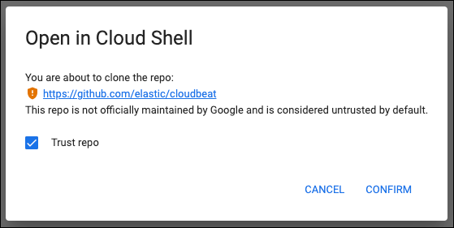

Get started with CSPM for GCPedit
Overviewedit
This page explains how to get started monitoring the security posture of your GCP cloud assets using the Cloud Security Posture Management (CSPM) feature.
Initial setupedit
You can set up CSPM for GCP either by enroling a single project, or by enroling an organization containing multiple projects. Either way, you need to first add the CSPM integration, then enable cloud account access.
Add your CSPM integrationedit
- From the Elastic Security Get started page, click Add integrations.
-
Search for
CSPM, then click on the result. - Click Add Cloud Security Posture Management (CSPM).
- Under Configure integration, select GCP, then either GCP Organization (recommended) or Single Account.
-
Give your integration a name that matches the purpose or team of the GCP account you want to monitor, for example,
dev-gcp-project.
Set up cloud account accessedit
To set up CSPM for a GCP project, you need admin privileges for the project.
For most users, the simplest option is to use a Google Cloud Shell script to automatically provision the necessary resources and permissions in your GCP account. This method, as well as two manual options, are described below.
Cloud Shell script setup (recommended)edit
- Under Setup Access, select Google Cloud Shell. Enter your GCP Project ID, and for GCP Organization deployments, your GCP Organization ID.
-
Under Where to add this integration:
- Select New Hosts.
-
Name the Elastic Agent policy. Use a name that matches the purpose or team of the cloud account or accounts you want to monitor. For example,
dev-gcp-account. - Click Save and continue, then Add Elastic Agent to your hosts. The Add agent wizard appears and provides Elastic Agent binaries, which you can download and deploy to a VM in your GCP account.
- Click Save and continue.
- Copy the command that appears, then click Launch Google Cloud Shell. It opens in a new window.
-
Check the box to trust Elastic’s
cloudbeatrepo, then click Confirm - In Google Cloud Shell, execute the command you copied. Once it finishes, return to Kibana and wait for the confirmation of data received from your new integration. Then you can click View Assets to see your data.
If you encounter any issues running the command, return to Kibana and navigate again to Google Cloud Shell.
During Cloud Shell setup, the CSPM integration adds roles to Google’s default service account, which enables custom role creation and attachment of the service account to a compute instance. After setup, these roles are removed from the service account. If you attempt to delete the deployment but find the deployment manager lacks necessary permissions, consider adding the missing roles to the service account: Project IAM Admin, Role Administrator.
Manual authentication (GCP organization)edit
To authenticate manually to monitor a GCP organization, you’ll need to create a new GCP service account, assign it the necessary roles, generate credentials, then provide those credentials to the CSPM integration.
Use the following commands, after replacing <SA_NAME> with the name of your new service account, <ORG_ID> with your GCP organization’s ID, and <PROJECT_ID> with the GCP project ID of the project where you want to provision the compute instance that will run CSPM.
Create a new service account:
gcloud iam service-accounts create <SA_NAME> \
--description="Elastic agent service account for CSPM" \
--display-name="Elastic agent service account for CSPM" \
--project=<PROJECT_ID>
Assign the necessary roles to the service account:
gcloud organizations add-iam-policy-binding <ORG_ID> \
--member=serviceAccount:<SA_NAME>@<PROJECT_ID>.iam.gserviceaccount.com \
--role=roles/cloudasset.viewer
gcloud organizations add-iam-policy-binding <ORG_ID> \
--member=serviceAccount:<SA_NAME>@<PROJECT_ID>.iam.gserviceaccount.com \
--role=roles/browser
The Cloud Asset Viewer role grants read access to cloud asset metadata. The Browser role grants read access to the project hierarchy.
Download the credentials JSON (first, replace <KEY_FILE> with the location where you want to save it):
gcloud iam service-accounts keys create <KEY_FILE> \
--iam-account=<SA_NAME>@<PROJECT_ID>.iam.gserviceaccount.com
Keep the credentials JSON in a secure location; you will need it later.
Provide credentials to the CSPM integration:
- On the CSPM setup screen under Setup Access, select Manual.
- Enter your GCP Organization ID. Enter the GCP Project ID of the project where you want to provision the compute instance that will run CSPM.
- Select Credentials JSON, and enter the value you generated earlier.
- Under Where to add this integration, select New Hosts.
-
Name the Elastic Agent policy. Use a name that matches the purpose or team of the cloud account or accounts you want to monitor. For example,
dev-gcp-account. - Click Save and continue, then follow the instructions to install Elastic Agent in your chosen GCP project.
Wait for the confirmation that Kibana received data from your new integration. Then you can click View Assets to see your data.
Manual authentication (GCP project)edit
To authenticate manually to monitor an individual GCP project, you’ll need to create a new GCP service account, assign it the necessary roles, generate credentials, then provide those credentials to the CSPM integration.
Use the following commands, after replacing <SA_NAME> with the name of your new service account, and <PROJECT_ID> with your GCP project ID.
Create a new service account:
gcloud iam service-accounts create <SA_NAME> \
--description="Elastic agent service account for CSPM" \
--display-name="Elastic agent service account for CSPM" \
--project=<PROJECT_ID>
Assign the necessary roles to the service account:
gcloud projects add-iam-policy-binding <PROJECT_ID> \
--member=serviceAccount:<SA_NAME>@<PROJECT_ID>.iam.gserviceaccount.com \
--role=roles/cloudasset.viewer
gcloud projects add-iam-policy-binding <PROJECT_ID> \
--member=serviceAccount:<SA_NAME>@<PROJECT_ID>.iam.gserviceaccount.com \
--role=roles/browser
The Cloud Asset Viewer role grants read access to cloud asset metadata. The Browser role grants read access to the project hierarchy.
Download the credentials JSON (first, replace <KEY_FILE> with the location where you want to save it):
gcloud iam service-accounts keys create <KEY_FILE> \
--iam-account=<SA_NAME>@<PROJECT_ID>.iam.gserviceaccount.com
Keep the credentials JSON in a secure location; you will need it later.
Provide credentials to the CSPM integration:
- On the CSPM setup screen under Setup Access, select Manual.
- Enter your GCP Project ID.
- Select Credentials JSON, and enter the value you generated earlier.
- Under Where to add this integration, select New Hosts.
-
Name the Elastic Agent policy. Use a name that matches the purpose or team of the cloud account or accounts you want to monitor. For example,
dev-gcp-account. - Click Save and continue, then follow the instructions to install Elastic Agent in your chosen GCP project.
Wait for the confirmation that Kibana received data from your new integration. Then you can click View Assets to see your data.